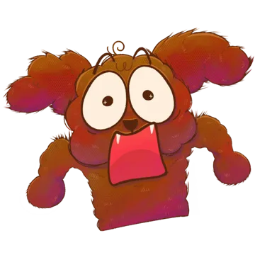

Seminggu Satu
Seminggu SatuCartons are made faster than you can blink.

Carton counter · live
Since you opened this page, around
0
drink cartons were produced by just one company.
packages sold in a year174 billion
every single day~477 million
Estimate based on Tetra Pak's 174 billion packages sold in 2025 [1], spread evenly across the year.